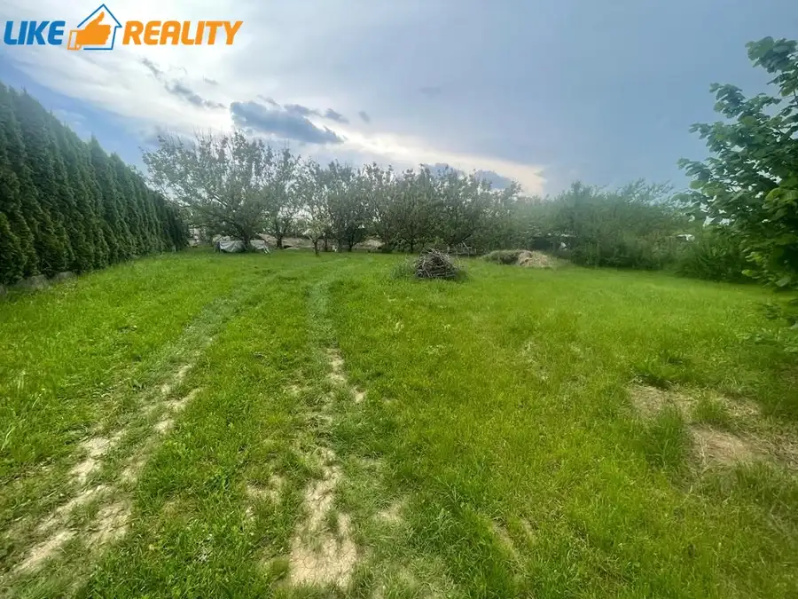
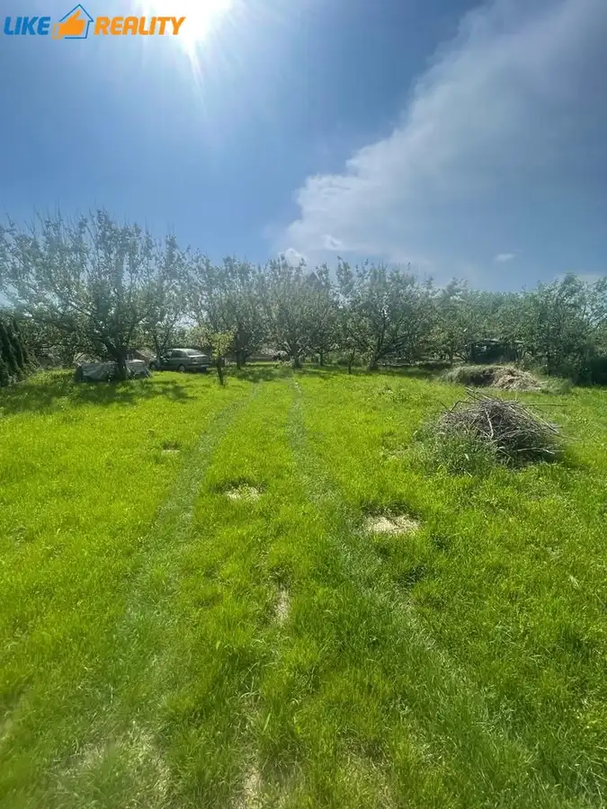
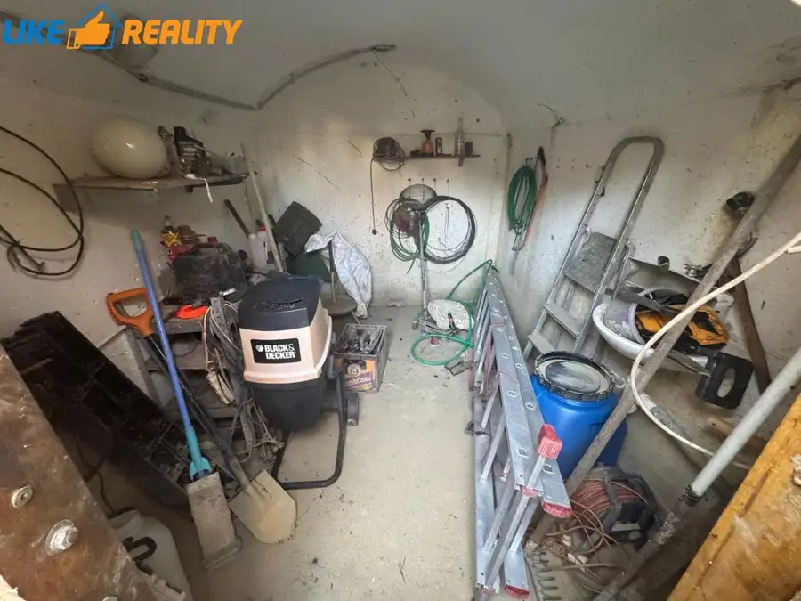
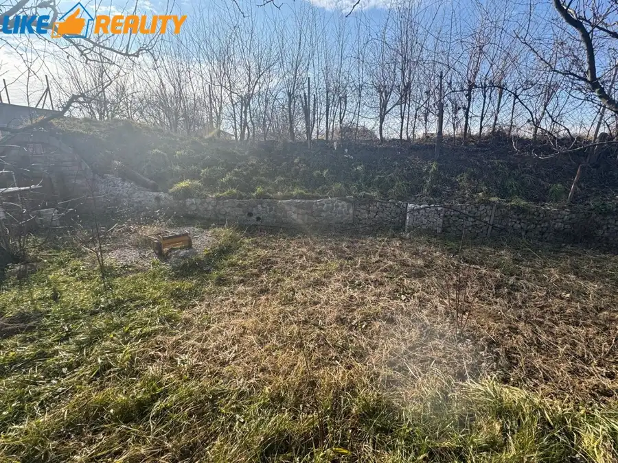
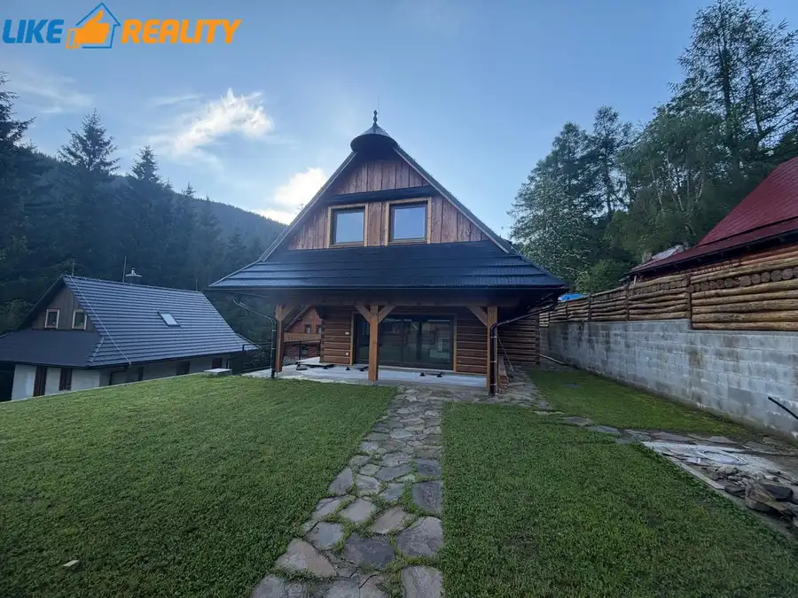
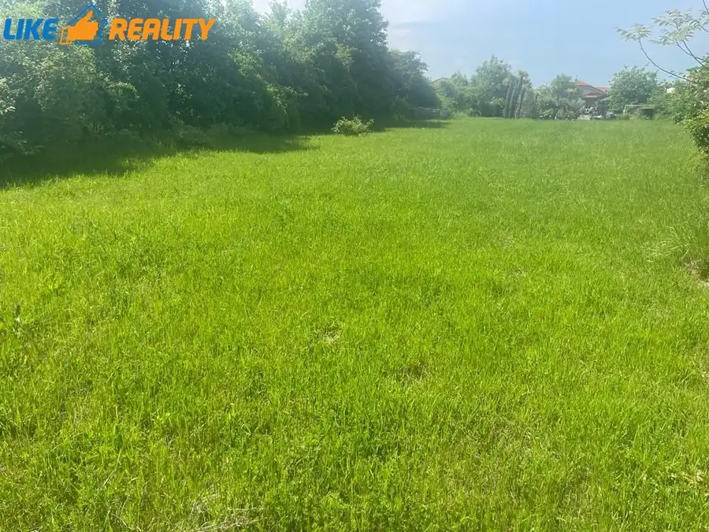
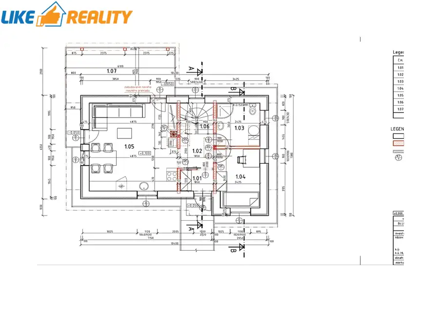

Exkluzívne:predaj stavebného pozemku-Nitra,(prameň)
Nitra




- Plocha800 m²
- VlastníctvoOsobné
O nehnuteľnosti
EXKLUZÍVNE Vám ponúkame na predaj pozemok nachádzajúci sa v preferovanej lokalite KLOKOČINA-PRAMEŇ za účelom výstavby rodinného domu s ideálnou výmerou 800 m2 (šírka 20m,dĺžka 40m).BONUS: Na pozemku je postavená podzemná pivnica na uskladnenie zaváranín a ovocia spolu s odkladacím priestorom na náradie.VÝHODY POZEMKU:- UZEMNÉ ROZHODNUTIE-VYRIEŠENÉ- krásna lokalita s výhľadom na mesto Nitra,- tiché prostredie- slnečný,rovinatý pozemokINŽINIERSKE SIETE:KOMPLETNÉ NAPOJENIE NA INŽINIERSKE SIETE – plyn,voda,elektrina,kanalizácia sa nachádzajú priamo na pozemku. K pozemku vedie asfaltová prístupová cesta s verejným osvetlením.Pozemok je oplotený.Na pozemku sa nachádzajú ovocné stromy, ktoré sú benefitom a dávajú možnosť budúcemu majiteľovi realizovať sa v záhrade.OBČIANSKA VYBAVENOSŤ: V blízkosti sa nachádza MHD zástavka (spojč.11),ktorá zebezpečuje rýchlu dostupnosť do centra mesta.KÚPNA CENA: 197680€/EUR, 247,10€/m2 V cene je zahrnutý právny servis, odmena RK. Pre viac informácií prosím kontaktujte makléra - Ing. Michal Chalupka, mobil: 0907 453 853, mail: michal.chalupka@likereality.sk
Parametre
- Druh
- Pozemok pre rodinné domy
- Dátum zverejnenia
- 21. 07. 2025
- Dĺžka pozemku
- 40
- Elektrina
- Na pozemku, Na pozemku - 230 V
- Funkčné využitie
- Výstavba rodinného domu
- Odpadové vody
- Na pozemku - Kanalizácia
- Plocha pozemku
- 800 m²
- Plyn
- Na pozemku
- Pripravenosť k výstavbe
- Vydané územné rozhodnutie
- Prístupová komunikácia
- Asfaltová
- Terén pozemku
- Rovinatý
- Typ
- Predaj
- Vlastníctvo
- Osobné
- Voda
- Na pozemku, Na pozemku - Diaľkový vodovod
- Územie
- Intravilán
- Šírka pozemku
- 20
Kde to je


Mohlo by Vás zaujímať

Chata, drevenica, zrubNové 505 000 €Predaj: chata v Nízkych tatrách-Magurka Partizánska Ľupča 182 m²
PozemokNové 398 000 €Predaj:stavebný pozemok v Nitre( klokočina-šúdol) Nitra 2600 m²
DomNové 208 000 €Exkluzívne:predaj rodinného domu v obci Beluša-mestská časť podhorie (okres púchov) Beluša 122.74 m²